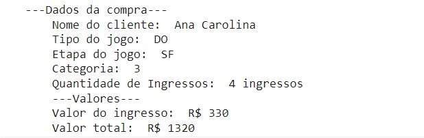

Ticket de Jogo
projeto
Como funciona?
O programa é um sistema de vendas de ingressos de jogos de futebol de um estádio. Para comprar o usuário deve fornecer algumas informações:
- Nome completo;
- Tipo de jogo: IN indica internacional; e DO indica doméstico;
- Etapa do jogo: SF indica semifinal; DT indica decisão de terceiro lugar; e FI indica final
- Categoria: pode ser as opções 1, 2, 3 ou 4;
- Quantidade de ingressos
O sistema seguiu uma tabela de preço fornecida pelo estádio, mas pode facilmente ser alterado conforme a necessidade do cliente. Veja o código abaixo.
Códigos por trás do Ticket virtual

Lista de tecnologias utilizadas do JavaScript
- condicionais
- comparadores
- função
- ingresso exibido no console
- interação do usuário por meio do prompt